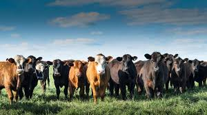
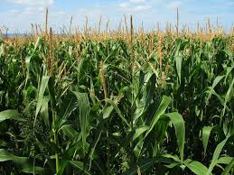
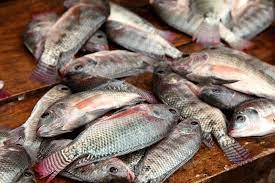
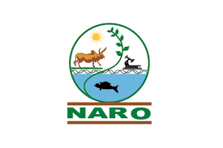
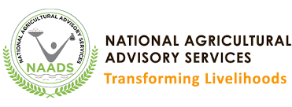

Welcome message from the Minister
Welcome to the official website of the Ministry of Agriculture, Animal Industry and Fisheries which doubles
as
the National Agricultural Sector Portal for the Republic of Uganda. Visitors are welcome to explore this
communication channel of the Ministry which complements stakeholder engagements, agricultural extensions,
publications and media features in showcasing work done within the guidance of the vision of the Vision of
"A
Competitive, Proffitable and Sustainable Agricultural Sector" and Mission "To trnsform Subsistence Farming
into
Commercial Agriculture."
For God and my Country
®Minister of Agriculture, Animal Industry and Fisheries
Ministry Vision
"A competitive, profitable and sustainable agricultural sector"
Ministry Mission
"To transform Subsistence Farming to commercial agriculture"

Directorate of Animal Resources (DAR)
Objectives: "To support sustainable animal disease and vector control, market oriented animal production,
food quality and safety; for improved food security and household income"

Directorate of Crop Resources(DCR)
Objective: "To support sustainable, market oriented crop production, pest and diseases control, qualityand
safety of plants and plant products; for improved food security and household income."

Directory of Fisheries Resources (DFR)
Objective:"To support sustainable, maket oriented fish production, management, development, control quality,
control quality and safety of fisheries products; for improved food security and household income."

Mandate: "to coordinate, oversee and guide agricultural research in Uganda."Goal is "To enhance the
contribution of the agriculturalresearch to sustainable agricultural productivity, sustainable agricultural
productivity, sustained competitiveness, economic growth, food security and poverty eradication."

Mandate "To support and manage Agricultural Input Distribution chains, promote strategic commodity
interventions, agricultural chain development and farmer access to agricultural financing."